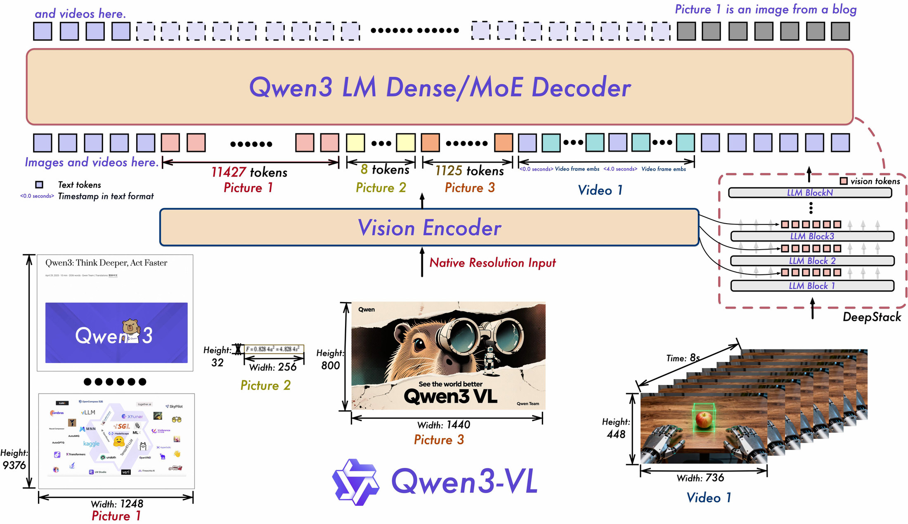
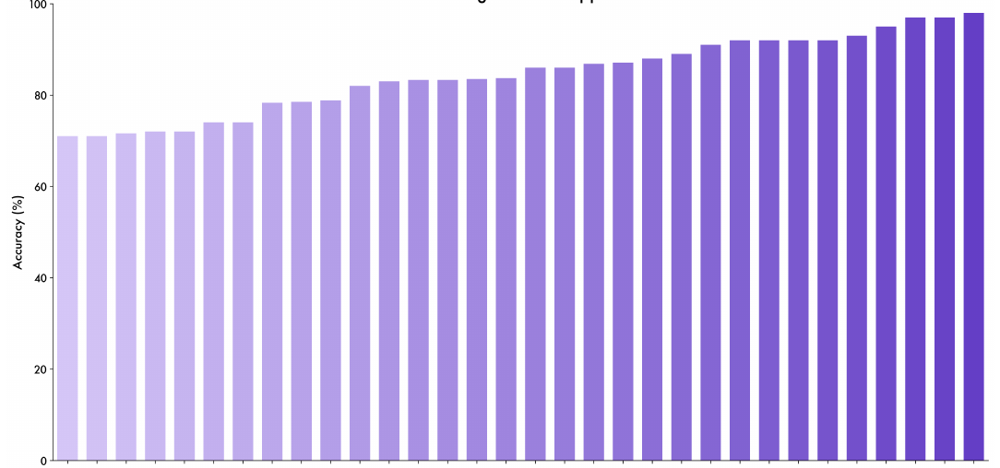
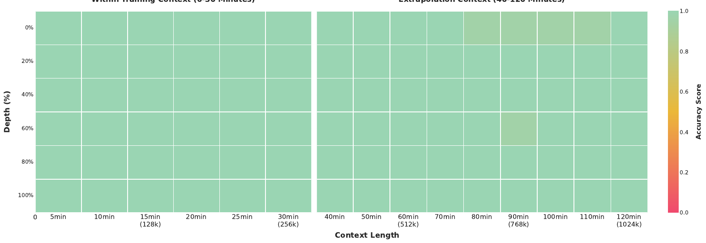

速览
MoE 30B-A3B / 235B-A22B
五句话读完
结构只改三处，只有一处做了消融
三处改动是 Interleaved-MRoPE、DeepStack 和文本时间戳 <3.0 seconds>。只有 DeepStack 有消融：平均分 74.7 → 76.0，而且是在一个内部 15B-A2B 模型上做的。表 12
预训练四段，序列长度一路加到 256K
S0 只训 merger，67B token → S1 约 1T、8K → S2 约 1T、32K → S3 100B、262,144。四段相加约 2.2T。表 1推算
数据几乎都由模型来标注
用 Qwen2.5-VL-32B 做以原始配文为条件的 recaption；3000 万条真实场景 OCR 完全没有人工标注；OCR 语种从 10 种扩到 39 种，其中 32 种准确率超过 70%。§3.2.1§3.2.3图 2
加了视觉，文本反而变强，但要看跟谁比
VL-32B-Instruct 的 AIME-25 是 66.2，同尺寸的 Qwen3-32B 只有 20.2。但旗舰 Thinking 版是 89.7，低于 Qwen3-235B-Thinking-2507 的 92.3。表 7表 6
文档、OCR、数学视觉领先，通用推理仍落后
旗舰在表 2 里的最高分：MathVista_mini 85.8（T）、OCRBench 920（I）、MMLongBench-Doc 57.0（I）。MMMU 80.6，低于 GPT-5-high 的 84.2*。表 2
架构：沿用三件套，改了位置编码、跨层融合和时间表示
整体仍是 ViT 编码器 → 两层 MLP merger（把 2×2 的视觉特征压成 1 个 token）→ Qwen3 LLM。§2

相对 Qwen2.5-VL 的三处结构改动
① Interleaved-MRoPE §2.1无消融
问题：Qwen2-VL 的 MRoPE 把 embedding 维度切成 t / h / w 三段，每段分到的旋转频率不同，频谱不均衡。原文说后续研究表明这会拖累长视频理解。
改法：把 t、h、w 交错排布到各个维度上，让每条轴都同时覆盖低频和高频。这个做法引自 Huang et al., 2025，不是本文首创。
② DeepStack：从 ViT 中间层取特征 §2.2有消融 · 表 12
原版 DeepStack 堆叠的是多尺度输入的 token。Qwen3-VL 改为从 ViT 的三个不同层级取特征，每层经过各自的 merger 投影后，直接加到 LLM 前三层对应位置的 hidden state 上。
DeepStack 消融 表 12
设定：内部 15B-A2B LLM，每组预训练 200B token，不做后训练，直接在验证集上测。
| 方法 | AVG | InfoVQA | DocVQA | OCRB | ChartQA | AI2D | MMStar | MMMU | TVQA |
|---|---|---|---|---|---|---|---|---|---|
| Baseline | 74.7 | 71.9 | 89.5 | 81.0 | 81.5 | 81.8 | 55.5 | 52.9 | 80.6 |
| + DeepStack | 76.0 | 74.2 | 91.1 | 83.6 | 83.3 | 83.2 | 57.7 | 54.1 | 80.5 |
文档、细粒度类任务涨得最多（InfoVQA +2.3、OCRB +2.6）；TVQA 微降 0.1。表中另有 RLWDQA 67.7→68.1、MMBEN 81.0→81.2、MMBCN 78.1→78.5。
③ 视频时间：从 T-RoPE 改为文本时间戳 §2.3无消融
原文认为 Qwen2.5-VL 的问题：时间位置 id 直接绑定绝对时间，① 长视频的 id 又大又稀疏；② 要学好，必须在各种 fps 上大量均匀采样，造数据成本高。
改法：给每个视频时间 patch 加一个文本前缀，如 <3.0 seconds>；训练时秒和 HMS（时:分:秒）两种格式混用。代价是上下文“略有增加”（modest），具体增加多少原文未披露。
其他组件变化
视觉编码器 §2表 11
从 SigLIP-2 官方权重出发，做动态分辨率继续训练；用 2D-RoPE，并按输入尺寸插值绝对位置编码（参照 CoMP）。
和原版 SigLIP-2 对比：CLIP 阶段 ImageNet 系基本持平，内部 OmniBench 从 36.9 → 45.5；接同一个 1.7B Qwen3、训练 1.5T token 后，RealWorldQA 58.7 → 66.1，AI2D 74.1 → 76.2，InfoVQA 65.3 → 67.0。
Merger §2
两层 MLP，把 2×2 的视觉特征压成 1 个视觉 token，对齐到 LLM 的 hidden 维度。另外为 DeepStack 配了几个专用 merger。
Loss 归一化 §1摘要无公式 / 无消融
从“按样本算 loss”改为“对每个 token 做平方根归一化”，用来平衡纯文本和多模态数据的贡献。原文只说它能提升多模态、不损文本能力。
Grounding 坐标系 §3.2.4
从 Qwen2.5-VL 的绝对坐标改为归一化到 [0, 1000]。理由是对分辨率和长宽比的变化更稳，后处理也更简单。
数据：上一代模型当标注器、改写器、过滤器和奖励模型
这一节信息量最大。论文没有给出预训练各数据来源的占比，所以下面只列原文明确写出的规模和流程，不画占比图。
流水线示意
已披露规模
只填原文写出的数字；没写的标「原文未披露」。
| 数据 | 规模 | 出处 |
|---|---|---|
| S0 对齐数据（caption / 视觉知识 / OCR） | 约 67B token | §3.1 · 表 1 |
| 图像 caption、交错图文、视频 | 原文未披露 | §3.2.1 · §3.2.7 |
| 知识实体类别 | 十几个语义大类（more than a dozen） | §3.2.2 |
| 真实场景 OCR | 3000 万条，无人工标注 | §3.2.3 |
| 多语种 OCR | 新增 29 种语言（共 39 种）；合成约 3000 万 + 真实图 100 万以上 | §3.2.3 |
| 文档解析 | CC PDF 300 万（10 类 × 30 万）+ 内部 400 万 | §3.2.3 |
| STEM 几何图（代码渲染） | 点定位 100 万；感知 VQA 200 万；图表 caption 600 万 | §3.2.8 |
| K12 / 本科习题 | 6000 万以上 | §3.2.8 |
| 多模态长 CoT（预训练） | 1200 万以上 | §3.2.8 |
| SFT | 约 120 万 | §4.2.1 |
| Long-CoT 冷启动 | 条数原文未披露；VL : 纯文本 ≈ 1 : 1 | §4.2.2 |
| Reasoning RL query | 约 3 万 | §4.4.1 |
| Thinking with images | 冷启动约 1 万 → 蒸馏约 12 万条多轮交互 | §4.5 |
| 预训练各阶段数据配比 | 原文未披露（只有定性描述） | §3.1 |
图像 caption：条件式 recaption §3.2.1
- Recaption 模型：一个专门为 recaption 微调过的 Qwen2.5-VL-32B，输入里带着原始配文。产出的 caption 补充了物体属性、空间布局和上下文语义，语言质量也更好。因为输入带着原文，alt-text 里的专名和知识信息不会丢。
- 去重：只在重写后的文本上按语义相似度去重，原文的理由是“不牺牲视觉多样性”。
- 补长尾：在视觉 embedding 上做聚类（引用 faiss、CLIMB 等），找出分布稀疏的区域，针对性补数据。
- 数据规模、caption 长度分布、recaption prompt：原文未披露。
交错图文 §3.2.1
- 用一个基于 Qwen 微调的轻量打分器做细粒度领域分类，再用同一个打分器剔除广告、推广、标题党等类别；剔哪些类别由各领域的验证实验决定。
- 书籍级数据：微调过的 Qwen2.5-VL-7B 做多模态解析，把正文和插图、图表对齐；连续页拼成最长 256K token 的序列，保留原始页序。
- 质控：删掉纯文本段和图文对齐度低的段；超长书籍序列要求达到最低页数和最低图文比。
知识 / 实体 §3.2.2
- 覆盖十几个语义大类：动物、植物、地标、食物、车辆、电子产品、服饰等。
- 按重要性采样：知名度高的实体多采，长尾实体按较小比例保留，以维持覆盖面。具体比例原文未披露。
- 把稀疏的 alt-text 换成 LLM 生成的丰富描述：主体实体之外，还写视觉属性、周边环境、空间布局，以及与其他物体或人的互动。
OCR、文档解析、长文档 §3.2.3
- 双格式标注：QwenVL-HTML 带元素级 bbox；QwenVL-Markdown 只定位图和表，表格用 LaTeX。
- 先合成后伪标：先造大规模、标注精确的合成 HTML，再系统地转成 Markdown；真实文档打伪标签后做质量过滤；最后两者混合。
- 长文档：① 把单页样本拼成“前面放多张页面图、后面放对应文本”的长解析序列；② 跨页 VQA，平衡题型，并让证据来自图、表、正文等不同元素。

Grounding、计数、空间与 3D §3.2.4–3.2.5
Point grounding
PixMo 的公开点标注、从检测/分割集转换来的数据，以及一条专攻细粒度细节的合成流水线。
计数
从 grounding 数据里挑出高质量子集，做成三种任务：直接计数、基于框计数、基于点计数。
空间理解
三类标注：关系（“笔记本左边的杯子”）、可供性（graspable / pressable / sittable）、需要规划的动作类问题。空间指代一律相对其他物体或场景坐标系，不用绝对坐标；问题由模板和 LLM 生成。
3D grounding
单视角图像 + 指代表达 + JSON 格式的 9-DoF 3D 框。过滤严重遮挡和不准的标签，按 Omni3D 统一到虚拟相机坐标系；另外合成了大量描述性 caption 作为指代表达。
代码、视频、STEM、Agent §3.2.6–3.2.9 · 展开
代码 §3.2.6
- 纯文本代码：复用 Qwen3 和 Qwen3-Coder 的语料。
- 多模态代码：UI 截图转 HTML/CSS、图转可编辑 SVG、视觉编程题、带图的 StackOverflow 问题，以及流程图/图表/LaTeX 公式转代码或标记语言。
视频 §3.2.7
- 由短到长的 caption 合成：生成与时间戳交错、按故事组织的长描述；再用内部 caption 模型补充“事件级时间摘要 + 片段级视觉细节”。
- 时空 grounding 数据分物体、动作、人物三个层级。
- 按标题、时长、类别标签等元数据平衡来源（教学、电影、第一人称视角等）。
- 按长度自适应采样：fps 和最大帧数随各阶段的序列长度上限调整。
STEM §3.2.8
- 用代码渲染几何图：100 万条点定位、200 万条感知 VQA。
- 两阶段 caption：先生成，再做模型校验，两阶段都用专用模型集成，产出 600 万条图表 caption。
- 6000 万以上 K12 和本科习题：清洗（丢掉图片损坏、内容无关、答案不全或错误的题）、中英互译、答案格式统一。
- 1200 万以上长 CoT 样本：用强推理模型的原始 rollout，经规则和模型双重校验，剔除答案模糊或中英混杂的样本，再用拒绝采样只留难题。
- 另外并入 Qwen3 的纯文本推理数据。
Agent §3.2.9
- GUI 感知：用元数据、解析工具和人工标注构造元素描述、dense caption、dense grounding 等任务。
- 多步轨迹：“自演化轨迹生产框架”加定向人工审核，并设计和增强 CoT 推理过程。
- 搜索：用真实的在线图搜和文搜工具采集多模态事实查询轨迹。
后训练数据 §4.2 · §4.4 · §4.5
SFT 两步过滤 §4.2.1
- Query：Qwen2.5-VL 剔除无法验证的 query；含糊的指令做最小改写；再评估难度和相关性。
- Response：先用规则去掉重复、不完整、格式错误；再用 Qwen2.5-VL 系的奖励模型，从正确性、完整性、清晰度、有用性几个维度打分，视觉任务额外检查对图像信息的使用。
Long-CoT 冷启动过滤 §4.2.2
- 只留基线模型通过率低或回答更长的题。
- 多模态必要性：视觉数学题里，凡是 Qwen3-30B-nothink 不看图也能做对的，一律丢掉。
- 去掉结论错误、重复、语言混杂、“猜答案”式的回答。
Reasoning RL 数据 §4.4.1
- 用 235B 的早期 checkpoint 对每题采样 16 次，16 次全错就丢掉。
- 按任务跑预实验，剔除提升空间小的数据源，最终约 3 万条 query。
- 训练每个尺寸时再采样 16 次，过滤通过率 > 90% 的易题。各任务按预设比例混成 batch，比例数值未披露。
Thinking with images §4.5
- 合成约 1 万条冷启动 grounding 样本（多为简单的两轮 VQA），在 Qwen2.5-VL-32B 上做 SFT 和多轮工具 RL，得到一个视觉 agent。
- 用它蒸馏出约 12 万条多轮交互数据，再给 Qwen3-VL 做冷启动 SFT 和工具 RL。
训练配方：四段预训练 + 三段后训练
学习率、batch size、训练步数等常规超参原文未披露。在 S0 之前，视觉编码器先单独做了动态分辨率的继续训练。§3.1
预训练 表 1 · §3.1
视觉-语言对齐
- 训练
- 仅 merger
- Token
- 67B
- 序列长
- 8,192
高质量 caption、视觉知识、OCR
多模态预训练
- 训练
- 全参
- Token
- ~1T
- 序列长
- 8,192
VL 数据 + 纯文本：交错、grounding、VQA、STEM，少量视频
长上下文预训练
- 训练
- 全参
- Token
- ~1T
- 序列长
- 32,768
提高纯文本比例；大幅增加视频和 agent 指令数据
超长上下文适配
- 训练
- 全参
- Token
- 100B
- 序列长
- 262,144
纯文本 + VL，重点是长视频和长文档
每个阶段的数据配比只有定性描述，比如 S2“提高纯文本比例”。具体百分比原文未披露。
后训练 §4.1–4.5
冷启动监督微调
- Instruct 用标准格式、Thinking 用 CoT 格式，两套数据分开 §4.1
- 第 1 个 epoch 用 32K；第 2 个 epoch 用 256K，长输入和 32K 数据交错 §4.2.1
- 长输入包括数百页的技术文档、整本教科书、最长 2 小时的视频
- Thinking 版另有 Long-CoT 冷启动数据 §4.2.2
强到弱蒸馏（只用纯文本）
- 只用纯文本数据微调 LLM 主干 §4.1
- 先 off-policy（用教师的回答），再 on-policy（学生自己生成，最小化学生和教师 logits 的 KL）§4.3
- 原文称对文本和多模态推理都有明显提升；§4.3 说这一步是为了提升轻量模型，旗舰是否也做了没有单独说明
Reasoning RL + General RL + 看图思考
- Reasoning RL：数学、代码、逻辑、视觉 grounding、视觉谜题，奖励都能用规则或代码执行器确定性验证；算法 SAPO；不设单独的格式奖励，改用任务定制的格式 prompt；回答语言和提问语言不一致时扣分 §4.4.1
- General RL：奖励分指令遵循和偏好对齐两维，规则奖励 + 模型奖励（judge 为 Qwen2.5-VL-72B-Instruct 或 Qwen3）；用反直觉计数、复杂钟表读数纠正 SFT 留下的错误先验；对语言混杂、重复、格式错误这类低频问题，单独建一个专门诱发它们的数据集集中惩罚 §4.4.2
- Thinking with images：三种奖励，见下 §4.5
Thinking with images 的三种奖励 §4.5
- 答案正确性：由 Qwen3-32B 判定。
- 多轮推理质量：由 Qwen2.5-VL-72B 判断模型是否正确理解工具反馈、是否逐步推理得出答案。
- 工具调用次数：实际调用次数和专家估计的目标次数对比，目标次数由 Qwen2.5-VL-72B 按任务复杂度离线给出。
加第三项的原因：早期实验里，模型退化成只调用一次工具来骗前两项奖励。
基础设施 §4.6
- 阿里云 PAI-Lingjun；Megatron-LM 上组合 TP / PP / CP / EP 和 ZeRO-1 DP，最大到 10,000 张 GPU。
- 推理和评测用 vLLM 或 SGLang。
评测：11 个类别，旗舰对比三家闭源
§5.1–§5.11 共 11 个评测类别。附录 A 开头的概述句省略了部分类别，以正文小节为准。表中带 * 的数字摘自对方的技术报告，带 + 的表示使用了工具。
旗舰 vs 闭源 表 2
对比对象：Gemini 2.5 Pro（thinking / budget-128）、GPT-5（high / minimal）、Claude Opus 4.1（thinking / non-thinking）。下表精选 20 行，圆点表示本行 8 列中的最优值（OmniDocBench 越低越好）。
| Benchmark | Qwen3-VL-235B Thinking | Qwen3-VL-235B Instruct | Gemini 2.5 Pro thinking | Gemini 2.5 Pro budget-128 | GPT-5 high | GPT-5 minimal | Claude Opus 4.1 thinking | Claude Opus 4.1 non-thinking |
|---|---|---|---|---|---|---|---|---|
| STEM & Puzzle · §5.2 | ||||||||
| MMMU | 80.6 | 78.7 | 81.7* | 80.9 | 84.2* | 74.4* | 78.4 | 77.2 |
| MMMU-Pro | 69.3 | 68.1 | 68.8* | 71.2 | 78.4* | 62.7* | 64.8 | 60.7 |
| MathVista_mini | 85.8 | 84.9 | 82.7* | 77.7 | 81.3 | 50.9 | 75.5 | 74.5 |
| MathVision | 74.6 | 66.5 | 73.3* | 66.0 | 70.9 | 45.8 | 64.3 | 57.7 |
| General VQA · Alignment · §5.1 / §5.3 | ||||||||
| MMBench-EN | 88.8 | 89.3 | 90.1* | 88.4 | 83.8 | 81.3 | 79.4 | 83.0 |
| RealWorldQA | 81.3 | 79.2 | 78.0* | 76.0 | 82.8 | 77.3 | 69.9 | 68.5 |
| HallusionBench | 66.7 | 63.2 | 63.7* | 60.9 | 65.7 | 53.7 | 60.4 | 55.1 |
| 文档理解 / OCR · §5.4 | ||||||||
| DocVQA_test | 96.5 | 97.1 | 92.6 | 94.0 | 91.5 | 89.6 | 92.5 | 89.2 |
| OCRBench | 875 | 920 | 866 | 872 | 810 | 787 | 764 | 750 |
| OmniDocBench_en ↓ | 0.155 | 0.143 | 0.347 | 0.206 | 0.356 | 0.174 | 0.194 | - |
| CharXiv (RQ) | 66.1 | 62.1 | 67.9 | 62.9 | 81.1* | 57.8 | 63.6 | 60.2 |
| MMLongBench-Doc | 56.2 | 57.0 | 55.6 | 51.2 | 51.5 | 42.4 | 54.5 | 48.1 |
| Grounding · Spatial · Multi-Image · §5.5 / §5.7 / §5.8 | ||||||||
| RefCOCO-avg | 92.1 | 91.9 | 74.6* | - | 66.8 | - | - | - |
| ODinW-13 | 43.2 | 48.6 | 33.7* | 34.5 | - | - | - | - |
| ERQA | 52.5 | 51.3 | 55.3 | 50.3 | 65.7* | 42.0* | 34.8 | 28.0 |
| MuirBench | 80.1 | 73.0 | 77.2 | 74.0 | 77.5 | 66.5 | - | - |
| Video · Perception · Agent · §5.6 / §5.9 / §5.10 | ||||||||
| Video-MME (w/o sub) | 79.0 | 79.2 | 85.1 | 80.6 | 84.7 | 77.3 | 75.6 | 73.3 |
| MLVU (M-Avg) | 83.8 | 84.3 | 85.6 | 81.2 | 86.2 | 78.3 | 73.5 | 71.2 |
| V* | 85.9 | 93.7+ | 83.8 | 72.7 | 72.8 | 56.7 | - | - |
| OSWorld | 38.1 | 31.6 | - | - | - | - | - | 44.4 |
怎么读：领先最明显的是 OCR、文档、2D grounding、空间和数学视觉；通用知识推理（MMMU-Pro、CharXiv-RQ）、视频（Video-MME）和 ERQA 仍落后 GPT-5 或 Gemini 2.5 Pro。原文也承认 Gemini 2.5 Pro thinking 在通用 VQA 上整体最好。§5.1 视频对比时各家输入帧数不同（Qwen 最多 2,048 帧，Gemini 512、GPT-5 256、Claude 100），原文自己说不能保证完全公平。§5.9
精选点位图 表 2 · 表 5–7
所有横轴从 0 起（OCRBench 满分 1000，其余 0–100）。* 摘自对方报告。最后一张图把 VL 版（紫）和对应的纯文本 Qwen3（灰）放在一起：对第一代 Qwen3 大幅领先，对 2507 版的 Thinking 则落后。
完整表 2：旗舰 235B-A22B vs 闭源，共 66 行 展开
| Benchmark | Qwen3-VL-235B Thinking | Qwen3-VL-235B Instruct | Gemini 2.5 Pro thinking | Gemini 2.5 Pro budget-128 | GPT-5 high | GPT-5 minimal | Claude Opus 4.1 thinking | Claude Opus 4.1 non-thinking |
|---|---|---|---|---|---|---|---|---|
| STEM & Puzzle | ||||||||
| MMMU | 80.6 | 78.7 | 81.7* | 80.9 | 84.2* | 74.4* | 78.4 | 77.2 |
| MMMU-Pro | 69.3 | 68.1 | 68.8* | 71.2 | 78.4* | 62.7* | 64.8 | 60.7 |
| MathVista_mini | 85.8 | 84.9 | 82.7* | 77.7 | 81.3 | 50.9 | 75.5 | 74.5 |
| MathVision | 74.6 | 66.5 | 73.3* | 66.0 | 70.9 | 45.8 | 64.3 | 57.7 |
| MathVisionWP | 63.8 | 57.0 | 63.2 | 56.9 | 62.8 | 40.1 | 54.0 | 46.4 |
| We-Math | 74.8 | 67.5 | 80.6 | 74.5 | 73.8 | 51.8 | 65.2 | 60.2 |
| MathVerse_mini | 85.0 | 72.5 | 82.9 | 65.9 | 84.1 | 43.0 | 70.6 | 68.1 |
| DynaMath | 82.8 | 79.4 | 80.0 | 78.5 | 85.4 | 74.0 | 75.1 | 72.0 |
| Math-VR | 66.8 | 65.0 | 64.7* | 54.3 | 58.1 | 21.7 | 54.3 | 38.0 |
| ZeroBench | 4 | 2 | 3 | 1 | 2 | 2 | 3 | 1 |
| VlmsAreBlind | 79.5 | 80.4 | 86.1 | 78.5 | 80.5 | 53.4 | 77.8 | 72.2 |
| LogicVista | 72.2 | 65.8 | 72.0 | 68.7 | 71.8 | 46.3 | 67.3 | 63.5 |
| VisuLogic | 34.4 | 29.9 | 31.6 | 26.9 | 28.5 | 27.2 | 27.9 | 27.2 |
| VisualPuzzles | 57.2 | 54.7 | 60.9 | 56.9 | 57.3 | 47.9 | 48.8 | 47.6 |
| General VQA | ||||||||
| MMBench-EN | 88.8 | 89.3 | 90.1* | 88.4 | 83.8 | 81.3 | 79.4 | 83.0 |
| MMBench-CN | 88.6 | 88.9 | 89.7* | 86.4 | 83.5 | 79.9 | 84.9 | 74.3 |
| RealWorldQA | 81.3 | 79.2 | 78.0* | 76.0 | 82.8 | 77.3 | 69.9 | 68.5 |
| MMStar | 78.7 | 78.4 | 77.5* | 78.5 | 76.4 | 65.2 | 72.1 | 71.0 |
| SimpleVQA | 61.3 | 63.0 | 65.4 | 66.9 | 61.8 | 56.7 | 56.7 | 55.7 |
| Alignment | ||||||||
| HallusionBench | 66.7 | 63.2 | 63.7* | 60.9 | 65.7 | 53.7 | 60.4 | 55.1 |
| MM-MT-Bench | 8.5 | 8.5 | 8.4* | 7.6 | 7.6 | 7.5 | 7.8 | 7.9 |
| MIA-Bench | 92.7 | 91.3 | 92.3 | 91.3 | 92.4 | 92.6 | 91.2 | 90.0 |
| 文档理解 / OCR | ||||||||
| DocVQA_test | 96.5 | 97.1 | 92.6 | 94.0 | 91.5 | 89.6 | 92.5 | 89.2 |
| InfoVQA_test | 89.5 | 89.2 | 84.2 | 82.9 | 79.0 | 69.9 | 69.4 | 60.9 |
| AI2D (w. M.) | 89.2 | 89.7 | 90.9 | 90.0 | 89.7 | 84.1 | 86.4 | 84.4 |
| ChartQA_test | 90.3 | 90.3 | 83.3 | 62.6 | 59.7 | 59.1 | 86.2 | 83.9 |
| OCRBench | 875 | 920 | 866 | 872 | 810 | 787 | 764 | 750 |
| OCRBench_v2 (en) | 66.8 | 67.1 | 54.3 | 55.2 | 53.0 | 48.2 | 48.4 | 47.2 |
| OCRBench_v2 (zh) | 63.5 | 61.8 | 48.5 | 53.1 | 43.2 | 37.7 | 43.7 | 38.0 |
| CC-OCR | 81.5 | 82.2 | 77.2 | 76.8 | 68.3 | 66.1 | 69.1 | 66.0 |
| OmniDocBench_en ↓ | 0.155 | 0.143 | 0.347 | 0.206 | 0.356 | 0.174 | 0.194 | - |
| OmniDocBench_zh ↓ | 0.207 | 0.207 | 0.238 | 0.249 | 0.472 | 0.389 | 0.293 | - |
| CharXiv(DQ) | 90.5 | 89.4 | 94.4 | 87.8 | 89.2 | 79.5 | 88.5 | 87.8 |
| CharXiv(RQ) | 66.1 | 62.1 | 67.9 | 62.9 | 81.1* | 57.8 | 63.6 | 60.2 |
| MMLongBench-Doc | 56.2 | 57.0 | 55.6 | 51.2 | 51.5 | 42.4 | 54.5 | 48.1 |
| 2D/3D Grounding | ||||||||
| RefCOCO-avg | 92.1 | 91.9 | 74.6* | - | 66.8 | - | - | - |
| CountBench | 93.7 | 93.0 | 91.0* | 91.0 | 91.7 | 87.8 | 93.1 | 91.9 |
| ODinW-13 | 43.2 | 48.6 | 33.7* | 34.5 | - | - | - | - |
| ARKitScenes | 53.7 | 56.9 | - | - | - | - | - | - |
| Hypersim | 11.0 | 13.0 | - | - | - | - | - | - |
| SUNRGBD | 34.9 | 39.4 | 29.7 | - | - | - | - | - |
| Embodied / Spatial | ||||||||
| ERQA | 52.5 | 51.3 | 55.3 | 50.3 | 65.7* | 42.0* | 34.8 | 28.0 |
| VSI-Bench | 60.0 | 62.7 | - | - | - | - | - | - |
| EmbSpatialBench | 84.3 | 83.1 | 79.1 | 73.3 | 82.9 | 75.1 | 69.2 | 66.0 |
| RefSpatialBench | 69.9 | 65.5 | 36.5 | 35.6 | 23.8 | 23.1 | - | - |
| RoboSpatialHome | 73.9 | 69.4 | 47.5 | 49.2 | 53.5 | 43.6 | - | - |
| Multi-Image | ||||||||
| BLINK | 67.1 | 70.7 | 70.6* | 70.0 | 71.0 | 62.8 | 64.1 | 62.9 |
| MuirBench | 80.1 | 73.0 | 77.2 | 74.0 | 77.5 | 66.5 | - | - |
| Video | ||||||||
| MVBench | 75.2 | 76.5 | 69.9 | 65.8 | 75.3 | 64.6 | 61.4 | 59.0 |
| Video-MME (w/o sub) | 79.0 | 79.2 | 85.1 | 80.6 | 84.7 | 77.3 | 75.6 | 73.3 |
| MLVU (M-Avg) | 83.8 | 84.3 | 85.6 | 81.2 | 86.2 | 78.3 | 73.5 | 71.2 |
| LVBench | 63.6 | 67.7 | 73.0 | 69.0 | - | - | - | - |
| Charades-STA (mIoU) | 63.5 | 64.8 | - | - | - | - | - | - |
| VideoMMMU | 80.0 | 74.7 | 83.6* | 79.4 | 84.6* | 61.6* | 76.2 | 70.1 |
| MMVU | 71.1 | 68.1 | 74.9 | 72.2 | 73.0 | 68.1 | 66.4 | 61.4 |
| Perception with Tool | ||||||||
| V* | 85.9 | 93.7+ | 83.8 | 72.7 | 72.8 | 56.7 | - | - |
| HRBench-4K | 84.3 | 85.4+ | 87.3 | 84.8 | - | - | - | - |
| HRBench-8K | 76.6 | 82.4+ | 85.4 | 80.1 | - | - | - | - |
| Multi-Modal Coding | ||||||||
| Design2Code | 93.4 | 92.0 | 89.2 | 90.3 | 92.5 | 88.9 | 88.5 | 85.3 |
| ChartMimic | 78.4 | 80.5 | 83.9 | 79.9 | 62.1 | 41.4 | 85.2 | 82.9 |
| UniSVG | 65.8 | 69.8 | 70.0 | 67.9 | 71.7 | 74.5 | 73.0 | 72.5 |
| Multi-Modal Agent | ||||||||
| ScreenSpot Pro | 61.8 | 62.0 | - | - | - | - | - | - |
| OSWorldG | 68.3 | 66.7 | 45.2 | - | - | - | - | - |
| AndroidWorld | 62.0 | 63.7 | - | - | - | - | - | - |
| OSWorld | 38.1 | 31.6 | - | - | - | - | - | 44.4 |
| WindowsAA | 32.1 | 28.9 | - | - | - | - | - | - |
数值从原文表 2 逐行抽取。圆点为本行 8 列中的最优值，与原文的加粗/下划线规则（按推理/非推理分组）不同。
中小尺寸 表 3表 4
表 3 对比 Gemini 2.5 Flash 和 GPT-5 mini，表 4 对比 GPT-5 nano。下表各取同样 7 行。
| Benchmark | 32B Thinking | 32B Instruct | 30B-A3B Thinking | 30B-A3B Instruct | Gemini 2.5 Flash thinking | GPT-5 mini high | 8B Thinking | 8B Instruct | 4B Instruct | GPT-5 nano high |
|---|---|---|---|---|---|---|---|---|---|---|
| MMMU | 78.1 | 76.0 | 76.0 | 74.2 | 77.7 | 79.0 | 74.1 | 69.6 | 67.4 | 75.8 |
| MathVista_mini | 85.9 | 83.8 | 81.9 | 80.1 | 79.4 | 79.1 | 81.4 | 77.2 | 73.7 | 71.5 |
| RealWorldQA | 78.4 | 79.0 | 77.4 | 73.7 | 76.0 | 79.0 | 73.5 | 71.5 | 70.9 | 71.8 |
| OCRBench | 855 | 895 | 839 | 903 | 853 | 821 | 819 | 896 | 881 | 753 |
| MMLongBench-Doc | 54.6 | 55.4 | 47.4 | 47.1 | 49.0 | 50.3 | 48.0 | 47.9 | 43.5 | 31.8 |
| Video-MME (w/o sub) | 77.3 | 76.6 | 73.3 | 74.5 | 79.6 | 78.9 | 71.8 | 71.4 | 69.3 | 66.2 |
| OSWorld | 41.0 | 32.6 | 30.6 | 30.3 | - | - | 33.9 | 33.9 | 26.2 | - |
左 6 列来自表 3，右 4 列来自表 4。橙框：§5.1 正文写 32B-Thinking 的 RealWorldQA 是 79.4，表 3 是 78.4（见局限 1）。8B-Instruct 的 OCRBench（896）高于 32B-Instruct（895）。
完整表 3：30B-A3B / 32B vs Gemini 2.5 Flash / GPT-5 mini 展开
| Benchmark | 30B-A3B Thinking | 30B-A3B Instruct | 32B Thinking | 32B Instruct | Gemini 2.5 Flash thinking | Gemini 2.5 Flash non-thinking | GPT-5 mini high | GPT-5 mini minimal |
|---|---|---|---|---|---|---|---|---|
| STEM & Puzzle | ||||||||
| MMMU | 76.0 | 74.2 | 78.1 | 76.0 | 77.7 | 76.3 | 79.0 | 67.9 |
| MMMU-Pro | 63.0 | 60.4 | 68.1 | 65.3 | 67.2 | 65.9 | 67.3 | 53.7 |
| MathVista_mini | 81.9 | 80.1 | 85.9 | 83.8 | 79.4 | 75.3 | 79.1 | 59.6 |
| MathVision | 65.7 | 60.2 | 70.2 | 63.4 | 64.3 | 60.7 | 71.9 | 46.6 |
| MathVisionWP | 58.9 | 52.3 | 58.6 | 54.6 | 53.6 | 49.0 | 56.6 | 42.8 |
| We-Math | 70.0 | 56.9 | 71.6 | 63.3 | 53.9 | 60.3 | 70.2 | 51.4 |
| MathVerse_mini | 79.6 | 70.2 | 82.6 | 76.8 | 77.7 | 75.9 | 78.8 | 36.5 |
| DynaMath | 80.1 | 73.4 | 82.0 | 76.7 | 75.9 | 69.7 | 81.4 | 71.3 |
| Math-VR | 61.7 | 61.3 | 62.3 | 59.8 | 58.8 | 54.7 | 58.2 | 26.4 |
| ZeroBench | 0 | 0 | 2 | 1 | 1 | 3 | 3 | 2 |
| VlmsAreBlind | 72.5 | 67.5 | 85.1 | 87.0 | 77.5 | 75.9 | 75.8 | 62.0 |
| LogicVista | 65.8 | 53.5 | 70.9 | 62.2 | 67.3 | 60.0 | 71.4 | 50.8 |
| VisuLogic | 26.6 | 23.0 | 32.4 | 29.7 | 31.0 | 23.3 | 27.2 | 27.6 |
| VisualPuzzles | 52.0 | 46.2 | 54.7 | 53.2 | 41.4 | 45.0 | 59.3 | 48.2 |
| General VQA | ||||||||
| MMBench-EN | 87.0 | 86.1 | 89.5 | 87.6 | 87.1 | 86.6 | 86.6 | 78.5 |
| MMBench-CN | 85.9 | 85.3 | 89.4 | 87.7 | 87.3 | 86.0 | 84.0 | 76.3 |
| RealWorldQA | 77.4 | 73.7 | 78.4 | 79.0 | 76.0 | 75.7 | 79.0 | 73.3 |
| MMStar | 75.5 | 72.1 | 79.4 | 77.7 | 76.5 | 75.8 | 74.1 | 61.3 |
| SimpleVQA | 54.3 | 52.7 | 55.4 | 56.9 | 63.2 | 59.2 | 56.8 | 50.3 |
| Alignment | ||||||||
| HallusionBench | 66.0 | 61.5 | 67.4 | 63.8 | 63.5 | 59.1 | 63.2 | 55.9 |
| MM-MT-Bench | 7.9 | 8.0 | 8.3 | 8.4 | 8.1 | 8.0 | 7.7 | 7.4 |
| MIA-Bench | 91.6 | 91.2 | 92.3 | 91.8 | 91.1 | 90.6 | 92.0 | 92.3 |
| 文档理解 / OCR | ||||||||
| DocVQA_test | 95.5 | 95.0 | 96.1 | 96.9 | 92.8 | 93.0 | 90.5 | 90.6 |
| InfoVQA_test | 85.6 | 81.8 | 89.2 | 87.0 | 82.5 | 81.7 | 77.6 | 72.8 |
| AI2D (w. M.) | 86.9 | 85.0 | 88.9 | 89.5 | 88.7 | 87.7 | 88.2 | 82.9 |
| ChartQA_test | 89.4 | 86.8 | 89.0 | 88.5 | 60.6 | 69.0 | 57.5 | 57.8 |
| OCRBench | 839 | 903 | 855 | 895 | 853 | 864 | 821 | 807 |
| OCRBench_v2 (en) | 62.6 | 63.2 | 68.4 | 67.4 | 52.2 | 50.6 | 52.6 | 45.7 |
| OCRBench_v2 (zh) | 60.4 | 57.8 | 62.1 | 59.2 | 43.8 | 43.9 | 45.1 | 41.0 |
| CC-OCR | 77.8 | 80.7 | 79.6 | 80.3 | 75.4 | 74.8 | 70.8 | 61.6 |
| OmniDocBench_en ↓ | 0.165 | 0.183 | 0.148 | 0.151 | 0.265 | 0.228 | 0.181 | 0.260 |
| OmniDocBench_zh ↓ | 0.233 | 0.253 | 0.236 | 0.239 | 0.245 | 0.305 | 0.316 | 0.425 |
| CharXiv(DQ) | 86.9 | 85.5 | 90.2 | 90.5 | 90.1 | 85.5 | 89.4 | 78.6 |
| CharXiv(RQ) | 56.6 | 48.9 | 65.2 | 62.8 | 61.7 | 60.1 | 68.6 | 48.9 |
| MMLongBench-Doc | 47.4 | 47.1 | 54.6 | 55.4 | 49.0 | 44.6 | 50.3 | 39.6 |
| 2D/3D Grounding | ||||||||
| RefCOCO-avg | 89.3 | 89.7 | 91.1 | 91.9 | - | - | - | - |
| CountBench | 90.0 | 89.8 | 94.1 | 94.9 | 86.0 | 83.7 | 91.0 | 84.1 |
| ODinW-13 | 42.3 | 47.5 | 41.8 | 46.6 | - | - | - | - |
| ARKitScenes | 55.6 | 56.1 | 46.1 | 55.6 | - | - | - | - |
| Hypersim | 11.4 | 12.5 | 12.5 | 14.0 | - | - | - | - |
| SUNRGBD | 34.6 | 38.1 | 33.9 | 37.0 | - | - | - | - |
| Embodied / Spatial | ||||||||
| ERQA | 45.3 | 43.0 | 52.3 | 48.8 | - | - | 54.0 | 45.8 |
| VSI-Bench | 56.1 | 63.2 | 61.2 | 61.5 | - | - | 31.5 | 30.5 |
| EmbSpatialBench | 80.6 | 76.4 | 82.7 | 81.5 | - | - | 80.7 | 72.1 |
| RefSpatialBench | 54.2 | 53.1 | 67.2 | 61.4 | - | - | 9.0 | 4.0 |
| RoboSpatialHome | 65.5 | 62.9 | 74.2 | 64.6 | - | - | 54.3 | 44.6 |
| Multi-Image | ||||||||
| BLINK | 65.4 | 67.7 | 68.5 | 67.3 | 68.1 | 66.8 | - | 56.7 |
| MuirBench | 77.6 | 62.9 | 80.3 | 72.8 | 72.7 | 67.5 | - | 57.5 |
| Video | ||||||||
| MVBench | 72.0 | 72.3 | 73.2 | 72.8 | - | - | - | - |
| Video-MME (w/o sub) | 73.3 | 74.5 | 77.3 | 76.6 | 79.6 | 75.6 | 78.9 | 71.0 |
| MLVU (M-Avg) | 78.9 | 81.3 | 82.3 | 82.1 | 82.1 | 77.8 | 83.3 | 71.7 |
| LVBench | 59.2 | 62.5 | 62.6 | 63.8 | 64.5 | 62.2 | - | - |
| Charades-STA (mIoU) | 62.7 | 63.5 | 62.8 | 61.2 | - | - | - | - |
| VideoMMMU | 75.0 | 68.7 | 79.0 | 71.9 | 73.9 | 65.2 | 82.5* | 56.7 |
| MMVU | 66.1 | 59.8 | 67.9 | 66.8 | 69.8 | 68.2 | 69.8 | 64.8 |
| Perception with Tool | ||||||||
| V* | 81.2 | 89.5+ | 84.8 | 91.1+ | - | - | 78.6 | 63.9 |
| HRBench-4K | 77.8 | 82.5+ | 82.1 | 84.6+ | - | - | 78.6 | 66.3 |
| HRBench-8K | 71.3 | 79.3+ | 74.8 | 81.6+ | - | - | 74.4 | 60.9 |
| Multi-Modal Agent | ||||||||
| ScreenSpot Pro | 57.3 | 60.5 | 57.1 | 57.9 | - | - | - | - |
| OSWorldG | 59.6 | 61.0 | 64.0 | 65.1 | - | - | - | - |
| AndroidWorld | 55.0 | 54.3 | 63.7 | 57.3 | - | - | - | - |
| OSWorld | 30.6 | 30.3 | 41.0 | 32.6 | - | - | - | - |
| WindowsAA | 24.2 | 24.9 | 42.9 | 30.9 | - | - | - | - |
完整表 4：2B / 4B / 8B vs GPT-5 nano 展开
| Benchmark | 2B Thinking | 2B Instruct | 4B Thinking | 4B Instruct | 8B Thinking | 8B Instruct | GPT-5 nano high | GPT-5 nano minimal |
|---|---|---|---|---|---|---|---|---|
| STEM & Puzzle | ||||||||
| MMMU | 61.4 | 53.4 | 70.8 | 67.4 | 74.1 | 69.6 | 75.8 | 57.6 |
| MMMU-Pro | 42.5 | 36.5 | 57.0 | 53.2 | 60.4 | 55.9 | 57.2 | 36.5 |
| MathVista_mini | 73.6 | 61.3 | 79.5 | 73.7 | 81.4 | 77.2 | 71.5 | 40.9 |
| MathVision | 45.9 | 31.6 | 60.0 | 51.6 | 62.7 | 53.9 | 62.2 | 33.2 |
| MathVisionWP | 35.5 | 30.9 | 48.7 | 44.4 | 53.3 | 45.4 | 49.3 | 28.3 |
| MathVerse_mini | 66.9 | 52.1 | 75.2 | 46.8 | 77.7 | 62.1 | 74.2 | 27.0 |
| DynaMath | 66.7 | 54.2 | 74.4 | 65.3 | 73.2 | 67.7 | 78.0 | 62.0 |
| Math-VR | 37.7 | 20.7 | 58.1 | 52.3 | 59.0 | 53.4 | 49.7 | 25.0 |
| ZeroBench | 0 | 0 | 0 | 0 | 2 | 1 | 1 | 1 |
| VlmsAreBlind | 50.0 | 56.0 | 68.6 | 71.9 | 69.1 | 74.0 | 66.7 | 40.2 |
| LogicVista | 50.0 | 35.8 | 61.1 | 53.2 | 65.1 | 55.3 | 59.7 | 40.5 |
| VisuLogic | 25.4 | 11.5 | 30.2 | 19.0 | 27.5 | 22.5 | 24.5 | 24.0 |
| VisualPuzzles | 37.4 | 34.3 | 48.9 | 43.7 | 51.7 | 47.9 | 43.5 | 31.3 |
| General VQA | ||||||||
| MMBench-EN | 79.9 | 78.4 | 84.6 | 83.9 | 85.3 | 84.5 | 78.4 | 50.8 |
| MMBench-CN | 78.8 | 75.9 | 83.8 | 83.5 | 85.5 | 84.7 | 77.6 | 48.5 |
| RealWorldQA | 69.5 | 63.9 | 73.2 | 70.9 | 73.5 | 71.5 | 71.8 | 60.7 |
| MMStar | 68.1 | 58.3 | 73.2 | 69.8 | 75.3 | 70.9 | 68.6 | 41.3 |
| SimpleVQA | 43.6 | 40.7 | 48.8 | 48.0 | 49.6 | 50.2 | 46.0 | 39.0 |
| Alignment | ||||||||
| HallusionBench | 54.9 | 51.4 | 64.1 | 57.6 | 65.4 | 61.1 | 58.4 | 39.3 |
| MM-MT-Bench | 6.9 | 5.9 | 7.7 | 7.5 | 8.0 | 7.7 | 6.6 | 6.2 |
| MIA-Bench | 85.6 | 83.6 | 91.0 | 89.7 | 91.5 | 91.1 | 89.9 | 89.6 |
| 文档理解 / OCR | ||||||||
| DocVQA_test | 92.9 | 93.3 | 94.2 | 95.3 | 95.3 | 96.1 | 88.2 | 78.3 |
| InfoVQA_test | 77.1 | 72.4 | 83.0 | 80.3 | 86.0 | 83.1 | 68.6 | 49.2 |
| AI2D (w. M.) | 80.4 | 76.9 | 84.9 | 84.1 | 84.9 | 85.7 | 81.9 | 65.7 |
| ChartQA_test | 86.6 | 79.1 | 88.8 | 84.6 | 88.6 | 89.6 | 52.1 | 48.6 |
| OCRBench | 792 | 858 | 808 | 881 | 819 | 896 | 753 | 701 |
| OCRBench_v2 (en) | 56.4 | 56.3 | 61.8 | 63.7 | 63.9 | 65.4 | 48.1 | 37.9 |
| OCRBench_v2 (zh) | 51.9 | 53.0 | 55.8 | 57.6 | 59.2 | 61.2 | 33.6 | 27.3 |
| CC-OCR | 68.3 | 72.8 | 73.8 | 76.2 | 76.3 | 79.9 | 58.9 | 52.9 |
| OmniDocBench_en ↓ | 0.370 | 0.292 | 0.234 | 0.244 | 0.209 | 0.170 | 0.401 | 0.454 |
| OmniDocBench_zh ↓ | 0.447 | 0.348 | 0.297 | 0.285 | 0.253 | 0.264 | 0.518 | 0.568 |
| CharXiv(DQ) | 70.1 | 62.3 | 83.9 | 76.2 | 85.9 | 83.0 | 82.0 | 64.4 |
| CharXiv(RQ) | 37.1 | 26.8 | 50.3 | 39.7 | 53.0 | 46.4 | 50.1 | 31.7 |
| MMLongBench-Doc | 33.8 | 31.6 | 44.4 | 43.5 | 48.0 | 47.9 | 31.8 | 22.1 |
| 2D/3D Grounding | ||||||||
| RefCOCO-avg | 84.8 | 85.6 | 88.2 | 89.0 | 88.2 | 89.1 | - | - |
| CountBench | 84.1 | 88.4 | 89.4 | 84.9 | 91.5 | 80.5 | 80.0 | 62.9 |
| ODinW-13 | 36.0 | 43.4 | 39.4 | 48.2 | 39.8 | 44.7 | - | - |
| ARKitScenes | 47.7 | 56.2 | 46.3 | 56.6 | 46.6 | 56.8 | - | - |
| Hypersim | 11.2 | 12.0 | 11.9 | 12.2 | 12.0 | 12.7 | - | - |
| SUNRGBD | 28.6 | 33.8 | 28.0 | 34.7 | 30.4 | 36.2 | - | - |
| Embodied / Spatial | ||||||||
| ERQA | 41.8 | 28.3 | 47.3 | 41.3 | 46.8 | 45.8 | 45.8 | 37.8 |
| VSI-Bench | 48.0 | 53.9 | 55.2 | 59.3 | 56.6 | 59.4 | 15.4 | 27.0 |
| EmbSpatialBench | 75.9 | 69.2 | 80.7 | 79.6 | 81.1 | 78.5 | 74.2 | 50.7 |
| RefSpatialBench | 28.9 | 30.3 | 45.3 | 46.6 | 44.6 | 54.2 | 12.6 | 2.5 |
| RoboSpatialHome | 45.3 | 49.1 | 63.2 | 61.7 | 62.0 | 66.9 | 46.1 | 44.8 |
| Multi-Image | ||||||||
| BLINK | 57.2 | 53.8 | 63.4 | 65.8 | 64.7 | 69.1 | 58.3 | 42.2 |
| MuirBench | 68.1 | 47.4 | 75.0 | 63.8 | 76.8 | 64.4 | 65.7 | 45.7 |
| Video | ||||||||
| MVBench | 64.5 | 61.7 | 69.3 | 68.9 | 69.0 | 68.7 | - | - |
| Video-MME (w/o sub) | 62.1 | 61.9 | 68.9 | 69.3 | 71.8 | 71.4 | 66.2 | 49.4 |
| MLVU (M-Avg) | 69.2 | 68.3 | 75.7 | 75.3 | 75.1 | 78.1 | 69.2 | 52.6 |
| LVBench | 47.6 | 47.4 | 53.5 | 56.2 | 55.8 | 58.0 | - | - |
| Charades-STA (mIoU) | 56.9 | 54.5 | 59.0 | 55.5 | 59.9 | 56.0 | - | - |
| VideoMMMU | 54.1 | 41.9 | 69.4 | 56.2 | 72.8 | 65.3 | 63.0 | 40.2 |
| MMVU | 48.9 | 41.7 | 58.6 | 50.5 | 62.0 | 58.7 | 63.1 | 51.0 |
| Perception with Tool | ||||||||
| V* | 69.1 | 75.9+ | 74.9 | 88.0+ | 77.5 | 90.1+ | - | - |
| HRBench-4K | 69.4 | 72.6+ | 73.5 | 81.3+ | 72.4 | 82.3+ | - | - |
| HRBench-8K | 62.6 | 68.9+ | 67.1 | 74.4+ | 68.1 | 78.0+ | - | - |
| Multi-Modal Agent | ||||||||
| ScreenSpot Pro | 32.2 | 48.5 | 49.2 | 59.5 | 46.6 | 54.6 | - | - |
| OSWorldG | 41.8 | 46.1 | 53.9 | 58.2 | 56.7 | 58.2 | - | - |
| AndroidWorld | 46.1 | 36.4 | 52.0 | 45.3 | 50.0 | 47.6 | - | - |
| OSWorld | 19.0 | 17.0 | 31.4 | 26.2 | 33.9 | 33.9 | - | - |
| WindowsAA | - | - | 35.5 | 23.4 | 24.1 | 28.8 | - | - |
纯文本：VL 版 vs 同尺寸纯文本 Qwen3 表 5–10
每格是“VL 版 / 纯文本对照”。绿色表示 VL 版更高，橙色表示更低。
| 对比（出处） | AIME-25 | HMMT-25 | LiveCodeBench v6 | GPQA | MMLU-Pro | Arena-Hard V2 |
|---|---|---|---|---|---|---|
| 对比 2507 版 | ||||||
| VL-235B-I vs Qwen3-235B-I-2507 表 5 | 74.7 / 70.3 | 57.4 / 55.4 | 54.3 / 51.8 | 74.3 / 77.5 | 81.8 / 83.0 | 77.4 / 79.2 |
| VL-235B-T vs Qwen3-235B-T-2507 表 6 | 89.7 / 92.3 | 77.4 / 83.9 | 70.1 / 74.1 | 77.1 / 81.1 | 83.8 / 84.4 | 74.8 / 79.7 |
| VL-30B-A3B-I vs Qwen3-30B-A3B-I-2507 表 7 | 69.3 / 61.3 | 50.6 / 43.0 | 42.6 / 43.2 | 70.4 / 70.4 | 77.8 / 78.4 | 58.5 / 69.0 |
| VL-4B-T vs Qwen3-4B-T-2507 表 10 | 74.5 / 81.3 | 53.1 / 55.5 | 51.3 / 55.2 | 64.1 / 65.8 | 73.6 / 74.0 | 36.8 / 34.9 |
| 对比第一代 Qwen3（非 2507） | ||||||
| VL-32B-I vs Qwen3-32B-I 表 7 | 66.2 / 20.2 | 46.1 / 10.9 | 43.8 / 29.1 | 68.9 / 54.6 | 78.6 / 71.9 | 64.7 / 37.4 |
| VL-32B-T vs Qwen3-32B-T 表 8 | 83.7 / 72.9 | 64.6 / 51.8 | 65.6 / 60.6 | 73.1 / 68.4 | 82.1 / 79.1 | 60.5 / 50.3 |
| VL-8B-I vs Qwen3-8B-I 表 9 | 45.9 / 20.9 | 32.5 / 11.8 | 39.3 / 25.5 | 61.9 / 39.3 | 71.6 / 63.4 | 46.3 / 15.5 |
| VL-8B-T vs Qwen3-8B-T 表 10 | 80.3 / 67.3 | 60.6 / 43.2 | 58.6 / 51.0 | 69.9 / 62.0 | 77.3 / 74.6 | 51.1 / 29.1 |
结论要加限定：“加了视觉后文本更强”在对比第一代 Qwen3 时全面成立，对比 Instruct-2507 时互有胜负（数学、代码赢，知识类输）；Thinking 旗舰在表 6 的多数文本项上都低于 Qwen3-235B-A22B-Thinking-2507。
纯文本评测的采样设置 §5.11 · 展开
- Instruct（235B-A22B / 32B / 30B-A3B）：temperature 0.7，top-p 0.8，top-k 20，presence penalty 1.5。
- Instruct（8B / 4B / 2B）：temperature 1.0，top-p 1.0，top-k 40，presence penalty 2.0。
- Thinking（MoE）：temperature 0.6，top-p 0.95，top-k 20。Thinking（dense）：temperature 1.0，top-p 0.95，top-k 20，presence penalty 1.5。
- 最大输出 32,768 token；Thinking 版在 AIME-25、HMMT-25、LiveCodeBench v6 上放宽到 81,920。
- Arena-Hard v2 由 GPT-4.1 判胜率，Creative Writing v3 由 Claude 3.7 Sonnet 打分。
长上下文：视频大海捞针 §5.12.3

新在哪
只列可以核对、并且相对前代或主流做法确实有变化的点。Interleaved-MRoPE 是引用的已有方法，不算在内。
DeepStack 的输入从“多尺度图像”换成“ViT 中间层”§2.2表 12
三层 ViT 特征经各自的 merger 加到 LLM 前三层，不增加 token。这是唯一有消融支撑的结构改动：平均 +1.3，InfoVQA +2.3。
放弃按绝对时间对齐的 MRoPE，改用文本时间戳 §2.3
用 <t seconds> 和 HMS 两种格式混合训练。这是一个明确的取舍：多花一点上下文，换掉对“多 fps 均匀采样”训练数据的依赖。
专门留一个 256K 的预训练阶段，并造了相应的数据 表 1§3.2.1§3.2.3
S3 用 100B token、262,144 序列长；配套构造了 256K 的书籍交错序列和多页文档解析序列。SFT 第 2 个 epoch 也在 256K 上训练。
用纯文本蒸馏给 VL 模型补文本能力 §4.3表 7–10
强到弱蒸馏只用纯文本、只调 LLM 主干，再配合按 token 的平方根归一化 loss。中小尺寸 VL 模型因此在 AIME、LiveCodeBench 上明显超过第一代 Qwen3。
注意：蒸馏和 loss 改动都没有单独消融，无法区分增益来自哪一步。
在 RL 阶段专门纠正先验、防奖励作弊 §4.4.2§4.5
用反直觉计数、钟表读数这类可验证任务纠正 SFT 留下的错误先验；把低频的坏行为单独建集集中惩罚；在看图思考的 RL 里加工具调用次数奖励，防止模型只调一次工具来骗奖励。
对图像编辑数据、评测和 caption 的启示
每条先说论文怎么做（带出处），再给一个能直接落到编辑基座数据流水线上的做法。后者是本文的迁移建议，不是论文内容。
C1条件式 recaption，不要只看图重写 §3.2.1
recaption 模型的输入是“图 + 原始配文”，所以 alt-text 里的专名和知识不会丢。
做法：重写编辑指令时，把原图、结果图和原始指令一起交给 captioner，要求保留原指令里的实体、文字内容和数值，只补充位置、属性和不该改的区域。抽检时对比重写前后的专名有没有丢。
C2去重和补长尾放在不同空间里做 §3.2.1
只在重写后的文本上做语义去重；在视觉 embedding 上聚类，找稀疏区域补数据。
做法：编辑对先按规范化后的指令文本去重，去掉“换个说法的同一种编辑”；再对（原图, 结果图）的视觉 embedding 或差分 embedding 聚类，找出样本稀少的编辑类型和场景，定向合成补齐。
C3实体按重要性采样，头部多、长尾保底 §3.2.2
知名度高的实体多采，长尾实体按较小比例保留以维持覆盖面。
做法：编辑数据按“编辑类型 × 主体类别”统计频次，头部组合限量、长尾组合设下限，不要让人像美颜或换背景这类高频任务吃掉全部配额。
C4坐标归一化，空间描述用相对关系 §3.2.4§3.2.5
框坐标统一到 [0, 1000]；空间指代都相对其他物体或场景来写，不用绝对坐标。
做法：编辑区域的 bbox 或点统一存成 [0, 1000] 归一化坐标，这样换分辨率、裁剪、改长宽比后标注仍然可用；指令里的位置描述优先用“杯子左边的书”这类相对说法。
D1OCR 用“专用模型伪标 + VLM 修正”，不做人工标注 §3.2.3
3000 万条真实场景 OCR 按 coarse-to-fine 流程完全由模型标注。
做法：文字编辑任务（换字、翻译招牌）的原图文字先用 OCR 模型出框和内容，再用 VLM 修正，作为 GT；评测时对结果图跑同一套 OCR，用字符准确率自动判分，人工只抽检。
D2先造标注精确的合成数据，再转成多种格式 §3.2.3
先合成 HTML（元素级框），再系统转成 Markdown；真实文档打伪标签后过滤，两者混合。
做法：用渲染或合成管线造“编辑区域和 mask 完全已知”的样本，同一份标注同时导出自然语言指令、结构化 JSON 指令、mask 三种格式；真实图走伪标加质量过滤，最后两类混合。
D3检测器和 VLM 一起定位，再过质量关 §3.2.4
Qwen2.5-VL 抽候选物体 → Grounding DINO 和 Qwen2.5-VL 一起定位 → 过滤低置信框。
做法：做“局部编辑”样本时，编辑目标由 VLM 提出，开放词表检测器定框，两者不一致的样本直接丢掉，比只信一方干净。
D4造“反直觉、可验证”的题来纠正先验 §4.4.2
用反直觉计数、复杂钟表读数这类可验证任务，纠正 SFT 留下的错误先验。
做法：为编辑模型造“把时钟改到 3:47”“桌上放正好 5 个苹果”“只改左手”这类结果可以被检测器或计数器自动验证的指令，专门压测模型的惯性输出。
F1多模态必要性过滤 §4.2.2
纯文本模型不看图就能做对的视觉数学题，一律丢掉。
做法：做编辑评测的 VQA 判分题时，先让 judge 不看结果图答一遍，答对的题说明能从指令文本里猜出来，没有区分度，应删除或改写。训练数据同理：不看原图也能写出结果描述的样本，说明指令和图像基本无关。
F2RL 数据两头过滤 §4.4.1
16 次采样全错的题丢掉（多半是脏数据），目标模型通过率超过 90% 的也丢掉（太简单）。
做法：编辑 RL 或偏好数据，先用当前模型每条采样 N 次、用 reward 打分，去掉全部失败的（多半是指令本身有问题）和几乎全部成功的，只留中间难度的指令。
F3低频坏行为单独建集 §4.4.2
语言混杂、重复这类问题出现频率低，在通用 RL 里样本效率太低，所以专门挑出能诱发它们的 prompt 集中惩罚。
做法：把身份漂移、非编辑区域被改、文字乱码这类低频但致命的失败，从线上 bad case 里收集成专门的触发集，单独做 RL 或 DPO，不要指望通用数据能把它们压下去。
F4用模型当 judge 时，加一项防作弊奖励 §4.5
模型学会只调用一次工具来骗前两项奖励，于是加了工具调用次数奖励来约束。
做法：VLM 当 reward 时，要警惕“几乎不改图也能拿高分”这类走捷径的行为：除了指令遵循分，再加一项改动幅度与指令是否匹配的约束（例如编辑区域内外的像素或感知差异），并定期看高分样本。
E1公开所有评测 prompt，并区分模式 附录 BB.8
附录 B 给出了每个基准的 prompt；视频题对 Instruct 和 Thinking 用不同模板（Thinking 版要求先分析关键时间点）。
做法：编辑评测的 judge prompt、打分细则、采样参数一起版本化发布；对比不同模型时 judge prompt 必须一致，换版本时重跑基线。
E2写清评测协议里会改变结果的设定 §5.5§5.9
ODinW 把全部类别一次放进 prompt、置信度固定 1.0；3D 用 mAP@0.15；VideoMMMU 改用模型判分，因为规则判分不准；视频帧数上限在报告里写明。
做法：编辑评测报告里写明输入分辨率、生成步数和 seed、judge 模型版本，以及哪些项用规则判、哪些用模型判。对方用的设定不同，就像原文那样在表下注明“不完全可比”。
E3警惕“换模式又加工具”的双变量对比 §5.6表 2
带工具的分数都在 Instruct 列，不带工具的在 Thinking 列，“工具带来约 5 分”同时混了两个变量。
做法：做消融时（比如加 prompt 改写器、加 inpainting 后处理），保证每次只改一个变量，并在表上标清楚。
局限与存疑
都能在原文里核对。
- 正文与表 3 数字矛盾（RealWorldQA）。§5.1 写 32B-Thinking 的 RealWorldQA 是 79.4，表 3 是 78.4。同段又说 32B-Instruct 以 79.0“甚至超过 Thinking 版”，如果按 79.4 就自相矛盾。按表 3，这一行最高的 79.0 是 32B-Instruct 和 GPT-5 mini high 并列，所以“32B-Thinking 拿到 RealWorldQA 最高分”的说法也不成立。同段 MMBench 写的是 89.5/89.5，表 3 的 MMBench-CN 是 89.4。§5.1表 3
- 关键设计缺少消融。Interleaved-MRoPE、文本时间戳、平方根归一化 loss、S0 只训 merger、纯文本蒸馏，都只有定性论述。唯一的结构消融（DeepStack）用的是内部 15B-A2B、200B token、不做后训练，能否外推到最终模型并不清楚。表 12
- 数据配比和规模披露不完整。各预训练阶段只有总 token 数，没有各来源占比；caption、交错图文、视频数据的规模都没给；“~1T”本身也是约数。表 1§3.2
- 视频对比的帧数不可比。Qwen3-VL 每个视频最多 2,048 帧（视频 token 不超过 224K），Gemini 2.5 Pro、GPT-5、Claude Opus 4.1 分别只有 512、256、100 帧。原文也承认无法保证完全公平。§5.9
- “工具带来约 5 分”混了两个变量。表 2–4 中带 + 的数字都在 Instruct 列，不带工具的在 Thinking 列。另外 §5.6 正文写 HRBench-4K / 8K 是 85.3 / 82.3，表 2 是 85.4+ / 82.4+，相差 0.1。§5.6表 2
- “文本超过纯文本基座”要加限定。Thinking 旗舰在 AIME-25（89.7 vs 92.3）、LiveCodeBench v6（70.1 vs 74.1）、GPQA（77.1 vs 81.1）等项上都低于 Qwen3-235B-A22B-Thinking-2507。大幅增益主要来自和第一代 Qwen3 的对比，而 VL 版额外做了纯文本蒸馏，增益未必来自多模态训练本身。表 6§4.3
- 多项结论依赖不公开的内部测试集。OmniBench、多语种 OCR 测试集、视频大海捞针都无法复现。表 11图 2图 3
- 没有讨论数据污染。预训练引入了 6000 万以上 K12 和本科习题，和 MathVista、MathVerse 等基准的题源相近，原文没有任何去污染说明。§3.2.8
- 文字小错。§2 写“three dense variants (2B/4B/8B/32B)”，实际是四个（§1 写的是 four）；§5.1 把 8B 称为“the largest model”，指的是小模型组里最大的。§2§5.1
- GUI agent 缺少同口径对照。OSWorld、AndroidWorld 的闭源列基本都是“-”。表 2 中唯一的闭源 OSWorld 数字是 Claude Opus 4.1 non-thinking 的 44.4，高于旗舰的 38.1；§5.10 称 32B“超过当前基础 VLM”，缺少可比数据支撑。表 2§5.10
图表索引
| 编号 | 看点 | 跳转 |
|---|---|---|
| 首页图 | Instruct / Thinking 两组雷达对比，数字以表 2 为准 | 首页图 |
| 图 1 | 整体架构：DeepStack 多层注入、Interleaved-MRoPE、文本时间戳 | 架构 |
| 图 2 | 39 种语言 OCR 准确率，32 种超过 70%（自建测试集） | 数据 · OCR |
| 图 3 | 视频大海捞针：256K 以内 100%，外推到约 1M 为 99.5% | 评测 · 长上下文 |
| 表 1 | 四段预训练的训练模块、token 预算、序列长度，是复现配方的骨架 | 训练配方 |
| 表 2 | 235B 旗舰 vs Gemini 2.5 Pro / GPT-5 / Claude Opus 4.1，66 行 | 评测 · 旗舰 |
| 表 3 | 32B / 30B-A3B vs Gemini 2.5 Flash / GPT-5 mini；RealWorldQA 与正文不一致 | 评测 · 中小尺寸 |
| 表 4 | 2B / 4B / 8B vs GPT-5 nano；8B-Instruct 的 OCRBench 为 896 | 评测 · 中小尺寸 |
| 表 5 | 旗舰 Instruct 的纯文本能力，对比 Qwen3-235B-I-2507、DeepSeek V3 0324、Claude Opus 4 | 评测 · 纯文本 |
| 表 6 | 旗舰 Thinking 的纯文本能力，多项低于 Qwen3-235B-T-2507 | 评测 · 纯文本 |
| 表 7 / 8 | 32B、30B-A3B 对比同尺寸纯文本 Qwen3（Instruct / Thinking） | 评测 · 纯文本 |
| 表 9 / 10 | 2B / 4B / 8B 对比 Qwen3-1.7B / 4B / 8B 和 4B-2507 | 评测 · 纯文本 |
| 表 11 | Qwen3-ViT vs SigLIP-2：CLIP 阶段和接 1.7B LLM 后的下游表现 | 架构 · 视觉编码器 |
| 表 12 | DeepStack 消融（15B-A2B、200B token）：平均 +1.3，文档类涨得最多 | 架构 · DeepStack |
| 附录 B | 全部评测 prompt 模板；B.8 中视频题的 Instruct 和 Thinking 模板不同 | 启示 · E1 |